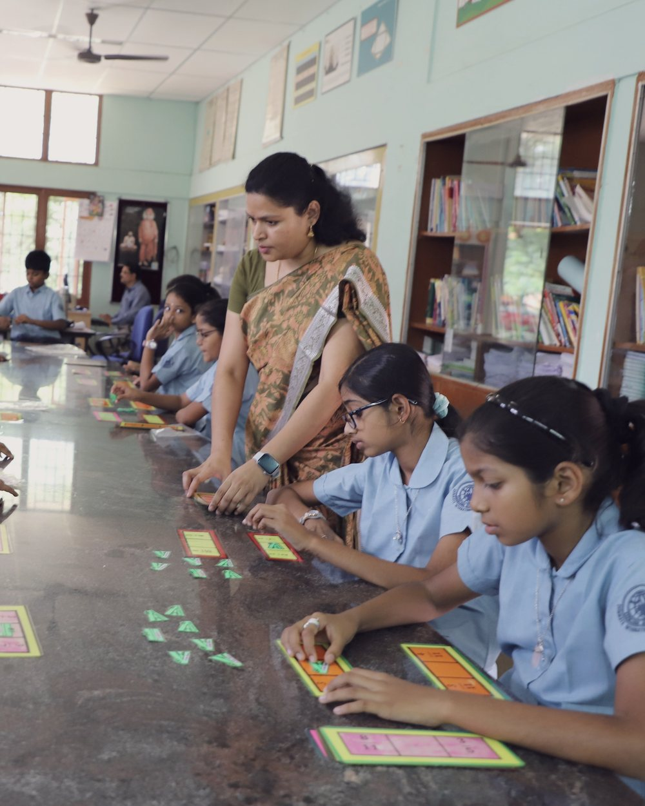

01 / Grades V–VIII
Junior School
Science, Mathematics, English, two additional languages and artificial intelligence. Published Class X results list Hindi, Sanskrit, Tamil and French as language subjects; ask which options run in each grade.
The foundation